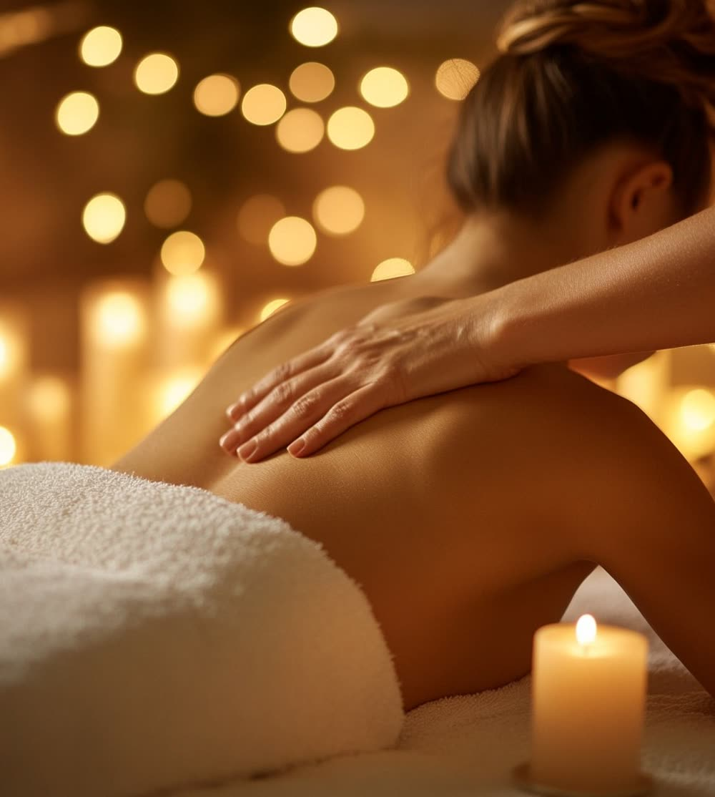

Masaże częściowe · Poznań
Krótki, ukierunkowany zabieg na partie, które przeciąża praca przy komputerze i prowadzenie samochodu. Od pół godziny - na tyle niewiele, że da się go zmieścić w przerwie, i na tyle regularnie, żeby napięcie nie zdążyło się nawarstwić.

Na czym polega
Osiem godzin przy monitorze zostawia ślad w bardzo przewidywalnych miejscach: u nasady czaszki, wzdłuż górnej części mięśnia czworobocznego, między łopatkami. Ten masaż nie próbuje objąć całego ciała - pracuje tylko tam, bo przy krótkim zabiegu to jedyny sposób, żeby zrobić coś naprawdę.
Zaczynamy od rozgrzania i rozluźnienia powierzchownych warstw, potem schodzimy głębiej w miejsca, które same się zgłaszają. Jeśli wybierzesz wariant z głową, dokładamy mięśnie podpotyliczne i skronie - to one najczęściej stoją za bólem głowy, który wydaje się brać znikąd.

Korzyści
Dla „kamienia” między łopatkami i barków, które same podjeżdżają do uszu.
Wariant z głową obejmuje mięśnie podpotyliczne i skronie, gdzie zwykle się zaczynają.
Kark i górna część pleców po kilku godzinach w jednej pozycji za kierownicą.
Krótki zabieg raz w miesiącu działa lepiej niż jeden długi raz na pół roku.
Jak przebiega zabieg
Gdzie napina najbardziej, czy dochodzi ból głowy, czy były urazy karku.
Powierzchowna praca, żeby mięsień wpuścił głębiej - bez tego nie ma sensu naciskać.
Miejsca, które same się zgłaszają, w tempie dostosowanym do Twojego oddechu.
Dwie–trzy rzeczy do zrobienia przy biurku, żeby efekt utrzymał się dłużej.
Czas trwania i cena
Trzydzieści minut wystarczy na jeden obszar - sam kark albo same plecy. Jeśli chcesz objąć plecy razem z barkami, wybierz 45 lub 60 minut, bo inaczej praca będzie powierzchowna.
Przeciwwskazania
Ból, który promieniuje do ręki, wiąże się z drętwieniem albo osłabieniem chwytu, nie jest zadaniem dla masażu - zacznij od lekarza lub fizjoterapeuty i wróć do nas z zaleceniami. Jeśli napięcie karku wraca mimo regularnych wizyt, warto rozważyć masaż tkanek głębokich.
FAQ
Na sam kark albo same plecy - tak. To wariant pomyślany jako regularna, krótka wizyta, a nie jednorazowy zabieg, który ma rozwiązać wszystko. Jeśli chcesz objąć plecy razem z barkami i karkiem, realniej jest zarezerwować 45 lub 60 minut.
Wersja z głową dokłada pracę na mięśniach podpotylicznych, skroniach i skórze głowy. To ma znaczenie przy napięciowych bólach głowy, które zwykle zaczynają się u nasady czaszki, a nie w samej głowie. Trwa 40 minut zamiast 30.
Do masażu pleców odsłaniamy plecy i przykrywamy resztę ciała. Jeśli cokolwiek Cię w tym krępuje, powiedz o tym przed zabiegiem - ułożenie i przykrycie dopasujemy do Ciebie.
To 50 minut obejmujące kark, barki, górną część pleców i przedramiona - komplet partii przeciążanych pracą przy komputerze. Opisujemy go osobno na stronie masażu biurowego.
Przy pracy siedzącej dobrze sprawdza się rytm mniej więcej raz w miesiącu, a przy nasilonym napięciu co dwa tygodnie przez pierwsze półtora miesiąca. Krótki masaż powtarzany regularnie daje więcej niż jeden długi raz na pół roku.
Rezerwacja online
Wybierz dogodny termin online - potwierdzenie otrzymasz od razu.
Używamy niezbędnych plików cookies, żeby strona działała. Za Twoją zgodą chcemy też korzystać z Google Analytics, żeby wiedzieć, które podstrony są przydatne. Wybór możesz zmienić w każdej chwili. Szczegóły w polityce prywatności.
Potrzebne do działania strony i zapamiętania Twojego wyboru. Nie można ich wyłączyć.
Google Analytics - zagregowane statystyki odwiedzin. Domyślnie wyłączone.